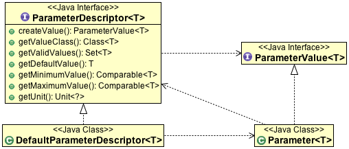
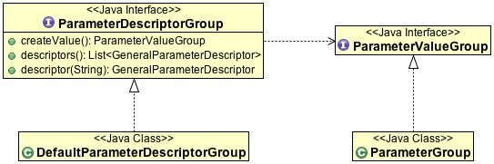

Parameter¶
The gt-referencing module is the first one to use the Parameter and ParameterGroup data structure defined by gt-opengis.
These Parameters are a bit odd for Java developers:
- They are actually a dynamic type system (you need to inspect the values at runtime in order to learn what values are acceptable)
- They are based an ISO Standard, rather than Java Beans
- They are strongly typed (you need a ParameterDescriptor in place to create a ParameterValue)
- They allow multiplicity, the same parameter can be repeated multiple times if needed. Very similar to how XML elements are allowed to repeat
- They allow parameters to be “grouped”, similar to how XML supports elements in a sequence
ParameterDescriptor and Parameter¶
A ParameterDescriptor is used to advertise what values are acceptable, the quickest way to show this is to create one.:
final DefaultParameterDescriptor RANGE =
new DefaultParameterDescriptor("Range", 15.0, -30.0, +40.0, null)
And then ask it questions:
System.out.println( RANGE.getMinimumValue().compareTo( new Double(2) ) );
System.out.println( RANGE.getMaximumValue().compareTo( new Double(20) ) );
Please note that metadata classes such as Identifier are used here:
Identifier name = RANGE.getName();
System.out.println( name );
A ParameterValue is used to hold a single value, within the limits of the ParameterDescriptor.:
ParameterValue value = (ParameterValue) RANGE.createValue();
value.setValue( 2.0 );
You are kind of on the honour system here:
value.setValue( 20.0 ); // out of RANGE
value.setValue( 2 ); // wrong type
You can actually get very specific with the use of units:
final DefaultParameterDescriptor LIMIT =
new DefaultParameterDescriptor(
Citations.GEOTOOLS, "Limit", Double.class,
null, null, null. null, SI.METER.divide(SI.SECOND), true);
You can indicate a set of valid values with a “CodeList” (like a Java 1.4 enum, but allows more values at runtime):
final DefaultParameterDescriptor STATUS = new DefaultParameterDescriptor("Status",Status.GOOD );
ParameterValue status = (ParameterValue) STATUS.createValue();
Here is that code list:
class Status extends CodeList {
private static final long serialVersionUID = 0L;
static ArrayList values = new ArrayList();
static Status GOOD = new Status("GOOD");
static Status BAD = new Status("BAD");
static Status UGLY = new Status("UGLY");
private Status( String name){
super( name, values );
}
public CodeList[] family() {
return (Status[]) values.toArray( new Status[ values.size()]);
}
}
ParameterDescriptorGroup and ParameterGroup¶
You can also have groups of parameters (that may repeat if needed as indicated by minOccurs and maxOccurs). Here is a simple example with associating prefix with URI.:
final DefaultParameterDescriptor PREFIX =
new DefaultParameterDescriptor(
Citations.GEOTOOLS, "Perfix", String.class,
null, null, null. null, null, true);
final DefaultParameterDescriptor NAMESPACE =
new DefaultParameterDescriptor(
Citations.GEOTOOLS, "Namespace", URI.class,
null, null, null. null, null, true);
final DefaultParameterDescriptorGroup REFERENCES = new DefaultParameterDescriptorGroup(
Citations.GEOTOOLS,
"Referneces",
new DefaultParameterDescriptor[]{PREFIX,NAMESPACE}
);
You can have groups within groups, and so on.
You can use a Map to quickly create a citation, incase a constant does not suite you:
Map metadata = new HashMap();
metadata.put( "authority", System.getProperties().get("user.name"));
metadata.put( "name", "References2");
metadata.put( "alias", "References II");
final DefaultParameterDescriptorGroup REFERENCES2 = new DefaultParameterDescriptorGroup(
metadata, 0, Integer.MAX_VALUE,
new DefaultParameterDescriptor[]{PREFIX,NAMESPACE}
);
The above example also has the References2 group being optional (minOccurs == 0), and any number of references are allowed (maxOccurs == Integer.MAX_VALUE ).